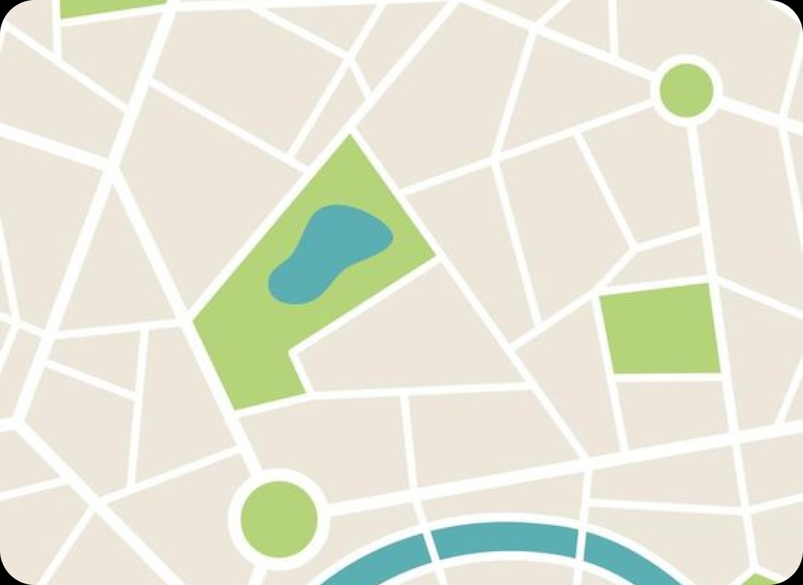

<app-navbar />
<div class="divisor">
  <div class="mapa-texto">
    
    <div class="textos-principal">
      <h1>Cidade Perfeita</h1>
      <h2>Uma cidade para coda gosto</h2>
    </div>
  </div>
  <div class="criadores">
    <h3>Criadores:</h3>
    <div class="span-criadores">
      <span>Douglas Nunes Guilherme</span>
      <span>Kawane de Gois Pereira</span>
      <span>Julia Silva de Oliveira</span>
      <span>Munir Arabi Marques</span>
    </div>
  </div>
</div>
